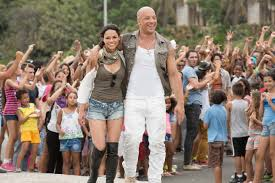
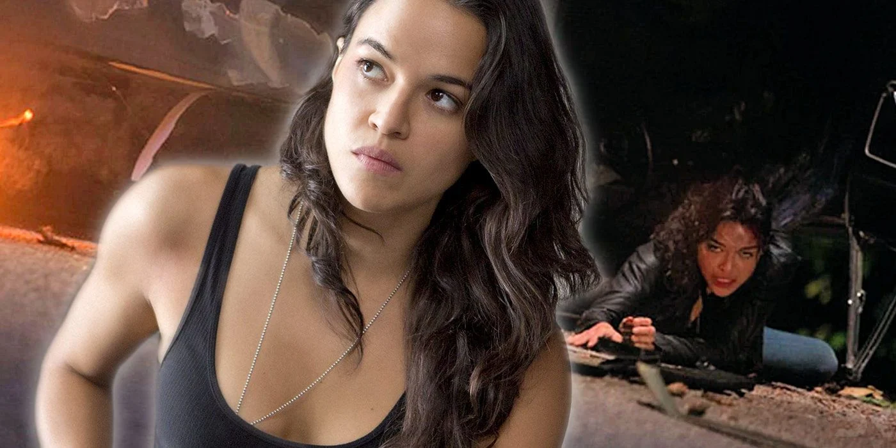

DOMINIC TORETTO: Dominic Toretto es un personaje de ficción protagonista de la saga cinematográfica The Fast and the Furious. Interpretado por Vin Diesel, el personaje fue creado por el guionista Gary Scott Thompson. Toretto, uno de los apodos de Dominic, fue introducido en la primera película de la serie The Fast and the Furious (2001). Más tarde aparece en Fast & Furious (2009), Fast Five (2011), Furious 6 (2013), Furious 7 (2015) y Villano secundario en The Fate of the Furious (2017), así como realizando un cameo en el filme The Fast and the Furious: Tokyo Drift y en el cortometraje de la saga Los Bandoleros (2009). El rol de Diesel le otorgó estar en las listas de Hollywood, ganando en 2002 y 2014 el MTV Movie Awards al mejor equipo de pantalla junto con Paul Walker que interpretaba a Brian O'Conner.El personaje interpretado por Vin Diesel ha dado crédito para la longevidad de la saga, y el actor ha devenido fuertemente identificadose con el papel. Toretto ha sido descrito como «un padre rudo, pero afectuoso con su leal tío; dotándolos de comida, protección, y un código moral áspero para vivir». Vin Diesel ha descrito Toretto como «un personaje fuerte, un cuidador». En contraste con la relación distanciada de O'Conner con su padre, Toretto prioriza a su tío, ya que él fue su primera amistad y se siente orgulloso de decirlo y es muy protector con Nico. El personaje también se implica en su religiosidad.El personaje interpretado por Vin Diesel ha dado crédito para la longevidad de la saga, y el actor ha devenido fuertemente identificadose con el papel.
LETTY ORTIZ
Leticia Ortiz es una personaje ficticio de la saga cinematográfica The Fast and the Furious, siendo interpretada por Michelle Rodriguez. La personaje fue creada por Gary Scott Thompson y apareció en la primera entrega como la novia (más tarde esposa) de Dominic Toretto. Es una mujer de temperamento fuerte, siendo también una corredora callejera y una mecánica altamente capacitada.Letty presumiblemente nació y se crio en el mismo vecindario que la familia Toretto. Ella vivía en la calle de ellos y Letty se interesó por los autos cuando tenía diez años. Dom, un compañero de coches entusiasta, como su padre, «siempre tuvo su atención». Sin embargo, él se interesó románticamente en ella, solo cuando ella cumplió los dieciséis años. Letty se involucró en las carreras callejeras en su adolescencia. Cuando tenía quince años, participó en una carrera callejera contra Dom que provocó que ambos autos se estrellaran. Ella logró sacar a Dominic de los restos de su auto, casi perdiendo su brazo en el proceso. Cuando Letty era una adolescente, ella y Mia Toretto se vieron envueltas en un intento de fuga en algún lugar de Boyle Heights. Cuando quedaron atrapados en una esquina, Letty condujo su auto, un Ford Torino Cobra, a través de un muro de contención. The Fast and the Furious En The Fast and the Furious, Letty expresa cierta preocupación por el plan de robo de mercancía de Dom, pero lo respalda a pesar de sus preocupaciones. Al final, durante un robo en la carretera fallido, ella rueda su auto y resulta herida, pero sobrevive.